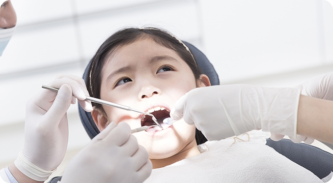

충치 예방을 위한 또 하나의 방법 불소도포
불소(Fluoride)는 할로겐 원소의 일종으로 치아 표면을 단단하게 하여, 세균들에 의해 형성되는 산에 잘 견디게 해주어 치아를 보호하는 작용을 합니다. 미국에서는 불소를 식품 영양소의 하나로 분류하고 있기도 합니다.
언제 해야할까요?
대부분 치아가 처음으로 맹출하는 유치열 초기부터 최후의 영구치가 맹출 한 뒤 2년 후까지, 즉 14~15세 까지는 이 기간 동안 지속적인 불소 도포가 필요합니다.
어떻게 해야 할까요?
-
전문가 불소도포법
치과에서 전문가의 진단 후 치아 표면에 직접 불소를 발라주는 것입니다. 적절한 간격(3~6개월)으로 주기적으로 해야 약 40%~70% 층치 예방효과를 볼 수 있습니다.
-
불소용액 양치법
불소가 함유된 양치액을 1분간 머금은 후 뱉는 방법입니다. 시판되는 불소 용액이 있으나, 반드시 담당 의사와 상의가 필요합니다.
불소 도포 후 주의사항
-
약 30분 동안 물을 포함한 모든 음식을 섭취하지 않고, 물로 헹구지 않기(고이는 침은 뱉어내기)
-
적어도 4~6시간 동안 도포 부위에 칫솔질 하지 않기